A public research module for ClosetAI where every data point links to the page that proves it — and where the AI can only reason over data a person already verified.
| Category | Pts | Evidence | § |
|---|---|---|---|
| Build discipline before coding | 1.5 | Packet committed at 11:37 (e3f65d3); first line of code at 11:51 (1d0f355). Public history. | 2 |
| UX planning and image-generated mockup | 1.0 | Image-generated mockup (Gemini) · wireframe with implementation notes and scope cut | 3 |
| Product spec and acceptance criteria | 1.0 | 11 requirements, each with a checkable criterion | 2 |
| Architecture and tech stack clarity | 1.0 | Data flow from browser to Postgres, with the contract gate marked; stack table with the why | 2 |
| Working deployed product | 2.0 | closetai.lat/research loads with no session; 14 of 14 end-to-end tests pass against production | 4, 10 |
| Coding/build evidence | 1.0 | 15 commits (min. 5) · 14 deployments (min. 2) · 10 coding-agent prompts | 6–9 |
| Testing and iteration | 1.0 | 50 unit tests · end-to-end against production · 3 live runs · 5 defects found by testing, fixed and redeployed · 1 real human conversation, in person, with consent | 10–12 |
| Human judgment and explanation | 1.0 | 9 corrections to my own research · decision note, 240 words | 5, 14 |
| Demo clarity | 0.5 | 2:30 walkthrough recorded against production, narrated by me | 13 |
| Required | Where it is |
|---|---|
| Research intake | A research question (20–500 characters) that returns a report citing only verified sources |
| 5 global examples | Benchmark cards: Whering, Stylebook, Style DNA, Indyx, Google try-on |
| Mexico localization | Mexico section: 77 M digital buyers, 59% buy clothes online, 35% "very satisfied", GoTrendier, Spanish-language apps |
| 8 competitors/substitutes | 11 in a table: 9 competitors and 2 substitutes |
| Filter/search table | Filter by type; search that ignores accents ("mexico" finds "México") |
| Risk map | 7 risks on a 3×3 probability × impact grid, each linked to its evidence |
| Saved research output | research_outputs table; saved reports listed on the page |
| 1 human validation conversation | Done in person on Sep 21, with consent; published on the page without a name (§11) |
| Create competitor table · add filter/search · add benchmark cards · save research record · add dashboard widget | All live. The dashboard widget is the summary panel at the top, computed from the database |
Written before touching code. Committed at 11:37 (e3f65d3); the first
file of the feature arrived at 11:51 (1d0f355). The research it stands on was verified
first, in the same commit.
ClosetAI was designed on a market thesis — "nobody serves Mexico" — written in August from desk research. When I checked it, part of it was false: there are closet apps in Spanish, and there is already an app called "Closet AI". Building three more weeks on an unverified thesis is the most expensive mistake a new product can make. And nobody outside the project — a professor, an investor, a potential user — could check today why ClosetAI would have a place in the market.
(1) Me, the founder, deciding with evidence what to build, at what price and under what name. (2) Whoever evaluates ClosetAI — professor, investor — who needs to see the proof, not believe it. (3) The person interviewed, whose real conversation becomes evidence, with consent.
/research loads in production with no session.One page, top to bottom, ordered the way an argument reads: summary panel → research question and report → 5 global examples → Mexico → competitors and substitutes → risk map → real conversation → saved reports → what we discarded. Wireframe in §3.
| # | Requirement | Acceptance criterion (checkable) |
|---|---|---|
| 1 | Public page | GET /research returns 200 with no session cookie |
| 2 | Summary panel | Counts come from the database, not from the code |
| 3 | 5 global examples | 5 cards, each with key fact, lesson, source link and date |
| 4 | Mexico localization | A Mexico section, each data point with its source |
| 5 | Competitors and substitutes | A table with at least 8 rows of type competitor or substitute |
| 6 | Filter and search | Filtering by type shows only that type; "mexico" finds "México"; no match shows a message, not an empty table |
| 7 | Risk map | Each risk placed by probability × impact, with its mitigation and evidence |
| 8 | Research question | 20–500 characters; the report passes a zod contract; every cited source exists in the data; a claim with no source is rejected; if the data is not enough, the report says so |
| 9 | Save | Writes a row to research_outputs and appears in the list without reloading |
| 10 | Human validation | Shows the real, consented conversation; if none, says "pending" |
| 11 | Cost and limit | Every report logs its cost; one IP cannot generate more than 10 per hour |
Browser (/research, no session)
│
▼
Server Component — reads research_sources · research_risks
validation_conversations · research_outputs
├─ Table (client): filter and accent-insensitive search over the loaded rows
├─ Risk map: 3×3 CSS grid
└─ Form → Server Action generarInvestigacion()
├─ validates the question with zod · checks the per-IP limit
├─ reads the verified data from Supabase
├─ calls Gemini with RESEARCH_PROMPT + that data, identified by id
│ └─ if the model is saturated or times out (25 s) → lighter backup model
├─ contract: zod schema + every cited id must exist ← if not, nothing is shown
└─ logs the cost in api_costs
▼ (the person decides to save)
guardarInvestigacion() ← re-checks the citations: reachable by direct POST
└─ inserts into research_outputs
Why the AI cannot search the internet: the report can only cite ids that exist in the table. An unverified data point cannot appear, because the contract rejects the whole report.
| Tool | For what | Why this one |
|---|---|---|
| Next.js 16 · Server Components and Actions | Page and logic | The project's stack; the Gemini key never leaves the server |
| Supabase Postgres | 4 new tables | This week the research is evidence: it has to live in the database, not in the code |
Gemini flash, with flash-lite as backup | Report from the data | Reasoning over short text; the backup was added after measuring the main model at 86 s |
| zod | Report and citation contract | The fence between what the model says and what is shown |
| Tailwind v4 | Styles and risk map | No chart library needed. No new dependencies |
vestiamx-code/closetai, branch main, automatic deploy to Vercel.006_research creates the 4 tables and seeds the verified data with source and
date; applied to production before deploying, and verified against the database.Automated: unit tests for the contract (it rejects an invented source and a claim with no source) and for accent-insensitive search; end-to-end tests that the page loads with no session and at least 8 rows, that a search with no match shows the message, that the risk map shows every risk, and that generating and saving a report writes a row. Three live runs against production, including one question the data cannot answer. One real conversation with a person in the segment, asking about past behavior rather than opinions of the idea.
Build the public page /research in ClosetAI (Next.js 16, App Router, Server Components and Actions, Tailwind v4, Supabase). Source of truth: docs/evidencia/INVESTIGACION-SEMANA-2.md. Do not add any data point that is not there, with its source. First the migration 006_research: tables research_sources, research_risks, validation_conversations and research_outputs, with public-read / server-write RLS. Seed the verified data with its source URL and date. The validation table requires consent and is NOT seeded: Tamara fills it with a real conversation. The page shows, in order: a summary panel with counts computed from the database; a research question form; 5 global benchmark cards; the Mexico section; the competitor and substitute table with type filter and accent-insensitive search; a 3×3 risk map; the validation conversation or "pending"; saved reports; and what was discarded as unverifiable. The report is generated by Gemini ONLY from the database rows, identified by id. Zod contract: every claim carries at least one source and every source must exist in the data; if the data is not enough, the report says so. Version the prompt in src/lib/ai/prompts/research.ts. Log the cost in api_costs and limit to 10 reports per IP per hour, as in /core.
The wireframe fixes the order of the argument and carries the implementation notes and scope cuts next to each section.
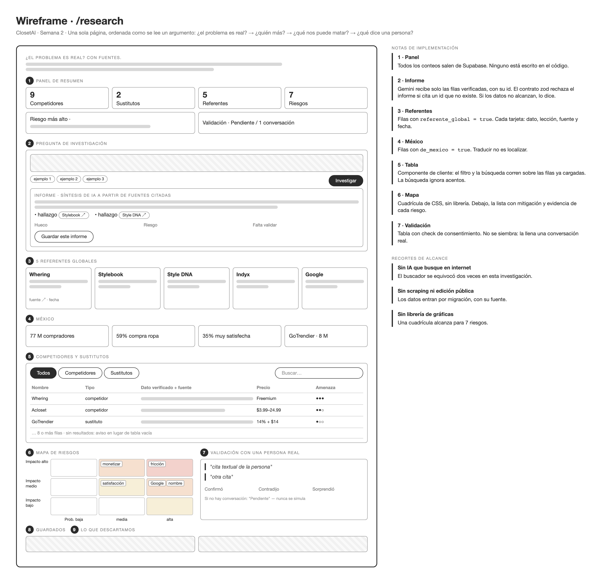
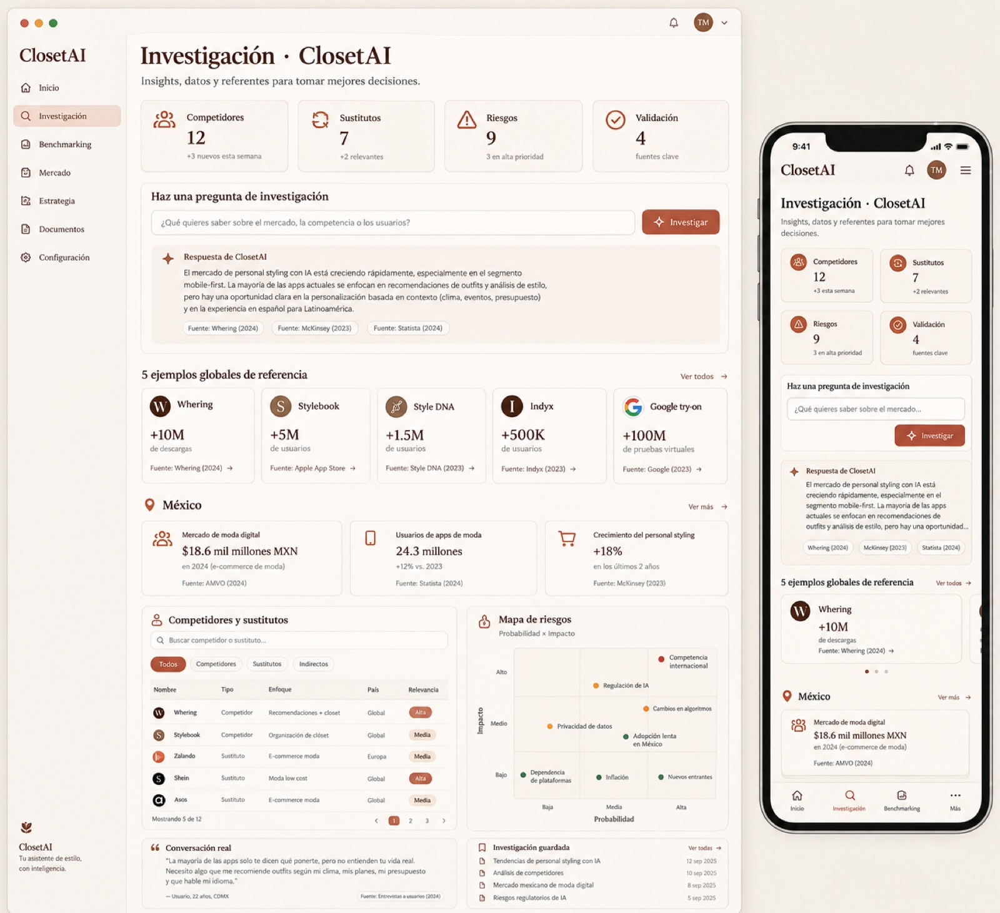
/research can only cite rows a
person verified.$ curl -s -o /dev/null -w "HTTP %{http_code}\n" https://closetai.lat/research
HTTP 200
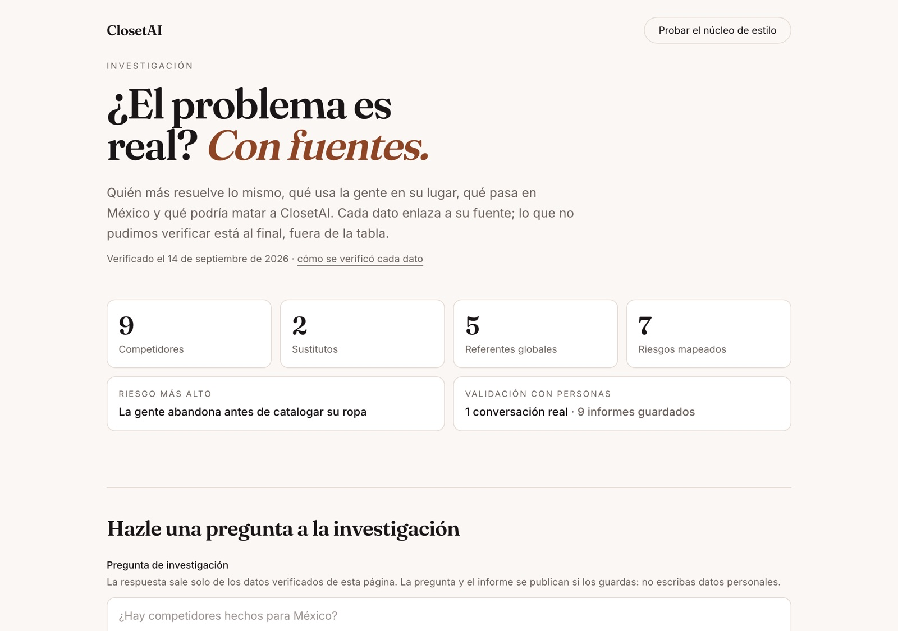
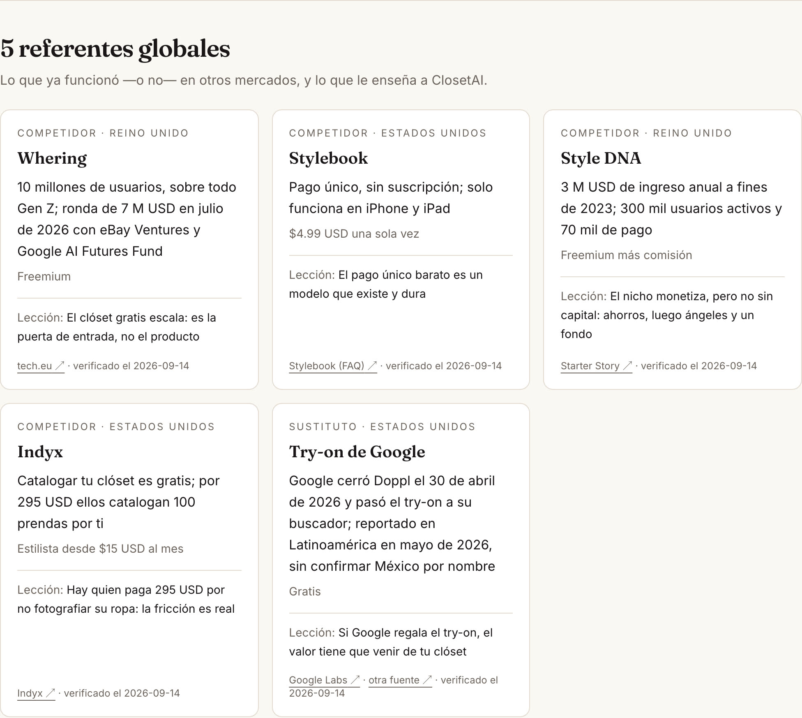
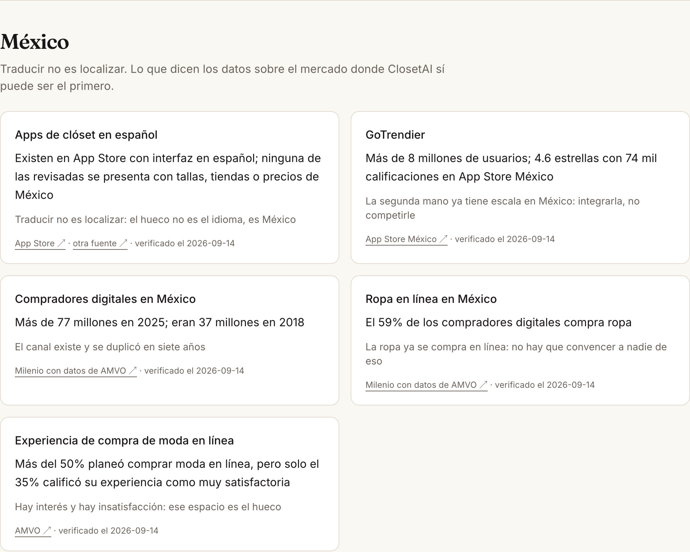
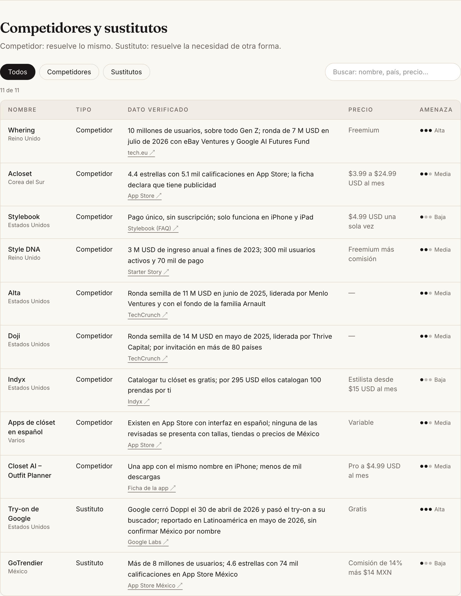
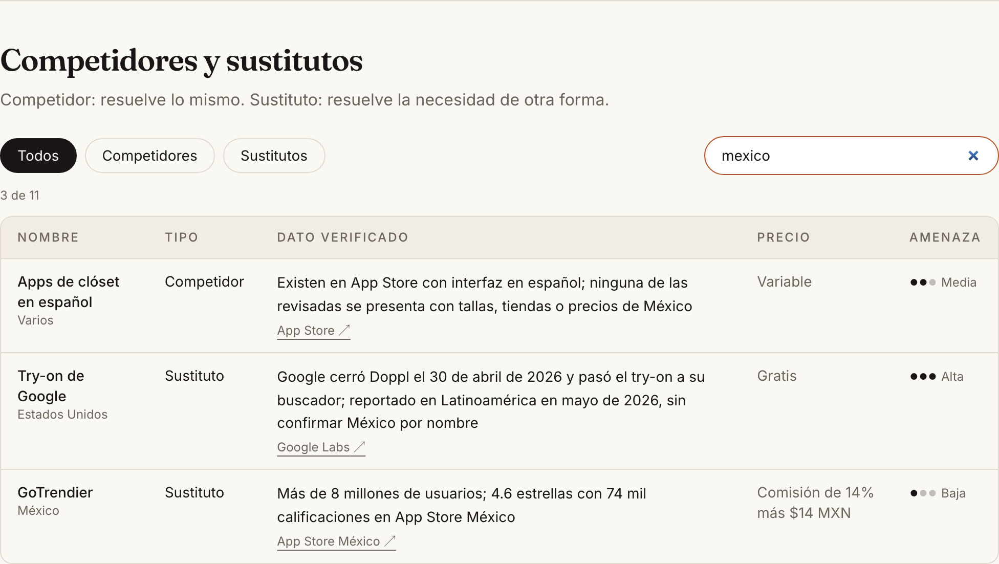
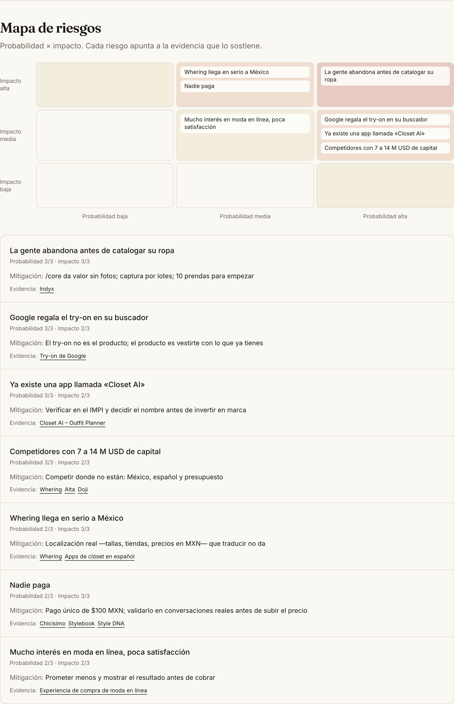
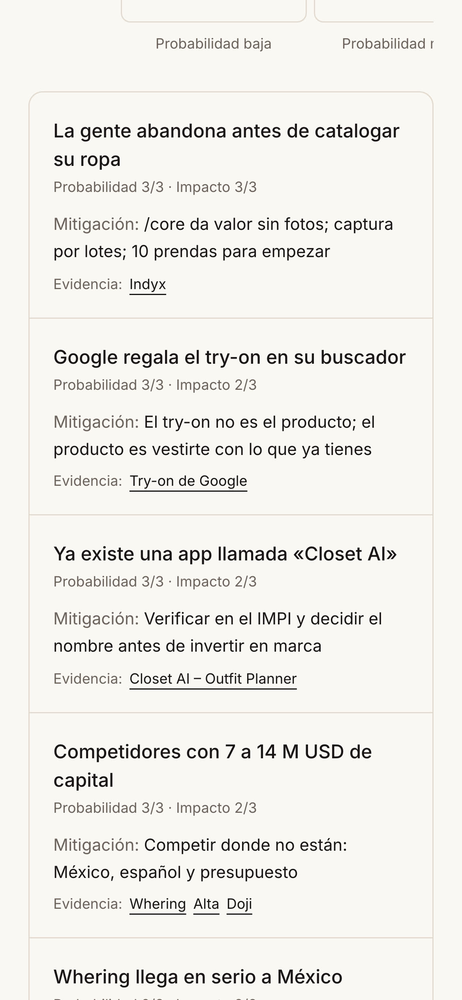
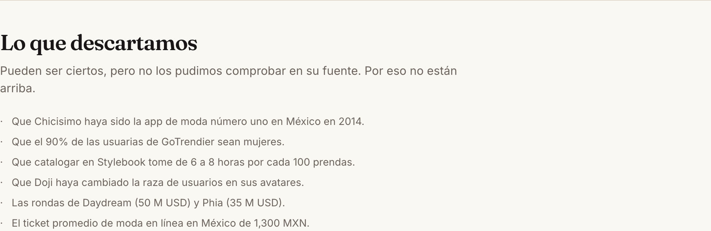
Every data point was checked by opening its source, not by reading a search engine's summary. That rule turned out to be necessary: the search engine summarized two figures wrong (Indyx's stylist price: it said $25/month, the page says $15; GoTrendier's commission: it said 20% + $9, the developer says 14% + $14).
| # | My master document said | The source says |
|---|---|---|
| 1 | "There is no native Spanish/LATAM player" | There are closet apps in Spanish on the App Store. The thesis changes: the gap is Mexico, not the language |
| 2 | Style DNA is bootstrapped | Its founder: personal savings, then angel investors and a fund |
| 3 | Acloset: "€130/year paywall" | App Store: plans from $3.99 to $24.99 USD a month, up to $147.99 a year |
| 4 | Alta and Doji raised in 2026 | Both rounds were in 2025 |
| 5 | Google's try-on "available in Mexico" | Reported for Latin America (May 2026); Mexico is not named |
| 6 | — | An app called "Closet AI" already exists — a new brand risk |
| 7 | Average online fashion ticket ~$1,300 MXN | No source found — excluded |
| 8 | — | GoTrendier, Mexican, has over 8 million users: secondhand already has scale in Mexico |
| 9 | — | Indyx charges $295 USD to catalog 100 items for you: cataloging friction is real |
Discarded as unverifiable (they may be true; they are not in the data): that Chicisimo was the #1 fashion app in Mexico in 2014; that 90% of GoTrendier users are women; that cataloging 100 items in Stylebook takes 6–8 hours; that Doji changed users' race in avatars; the Daydream and Phia rounds; the $1,300 MXN average ticket.
| Hash | When | Message |
|---|---|---|
| e3f65d3 | Sep 14, 11:37 | docs: Build Discipline Packet and verified research, before writing code |
| 1d0f355 | Sep 14, 11:51 | feat: /research — research and benchmarking with verified sources |
| 1b031c3 | Sep 14, 11:53 | docs: /research wireframe and the week's prompt log |
| bb9ac53 | Sep 14, 12:16 | fix: a Gemini 503 no longer asks the person to rephrase their question |
| 23abff3 | Sep 14, 12:33 | fix: if Gemini is saturated, the lighter model answers instead of making people wait |
| 4854dd1 | Sep 14, 12:41 | test: the quota gate checks both models, not just the main one |
| 46a1e64 | Sep 14, 12:43 | fix: prompt v2 — the report does not generalize beyond the data |
| f9ffc84 | Sep 14, 12:55 | docs: test and iteration evidence, and the per-IP limit in e2e |
| 11f1e28 | Sep 18, 17:04 | fix(db): every new account was born with a mis-encoded city |
| 7494e17 | Sep 21, 11:47 | docs: the real validation conversation and the decision note |
| e857c80 | Sep 21, 11:56 | perf(ai): the backup model steps in at 15 s, not 25 |
| a2badee | Sep 21, 12:02 | feat: demo video page at /demo/semana-2 |
| 7eeca68 | Sep 21, 12:05 | docs: decision note approved by me |
| 539ad85 | Sep 21, 12:13 | docs: /research mockup generated with Gemini |
| 87c2711 | Sep 25, 16:47 | feat: the demo video now carries my own narration |
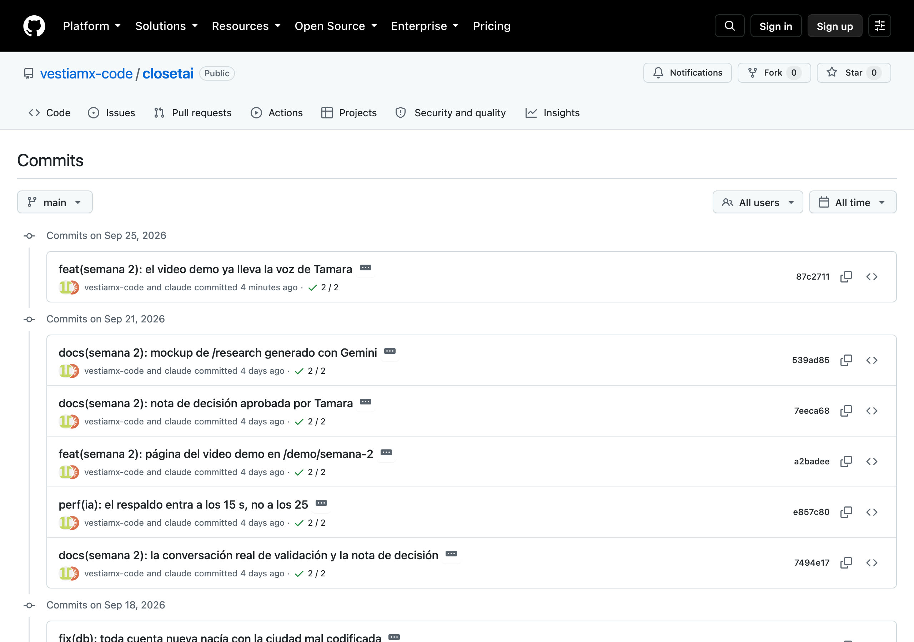
All Production, all Ready, with exact times read from Vercel.
| When | Status | What went out |
|---|---|---|
| Sep 14, 11:37 | ● Ready | The packet and the verified research |
| Sep 14, 12:08 | ● Ready | /research — after its migration was applied and verified |
| Sep 14, 12:16 | ● Ready | Fix: 503 recognized as a provider failure |
| Sep 14, 12:33 | ● Ready | Fix: backup model with a 25 s limit per attempt |
| Sep 14, 12:41 | ● Ready | Test fix: the quota gate |
| Sep 14, 12:44 | ● Ready | Prompt v2 |
| Sep 14, 12:55 | ● Ready | Evidence, and the per-IP limit in tests |
| Sep 18, 17:04 | ● Ready | Fix: the mis-encoded city for new accounts |
| Sep 21, 11:48 | ● Ready | The validation conversation and the decision note |
| Sep 21, 11:56 | ● Ready | The backup model at 15 s |
| Sep 21, 12:02 | ● Ready | The demo video page |
| Sep 21, 12:06 | ● Ready | The approved decision note |
| Sep 21, 12:14 | ● Ready | The Gemini mockup in the evidence |
| Sep 25, 16:47 | ● Ready | The demo video with my narration |
Migration 20260914000006_research: 4 tables, RLS, and the verified data
seeded with its source URL and verification date. Checked against the database, not the screen.
| What was checked | Result |
|---|---|
Rows in research_sources / research_risks | 15 / 7 |
validation_conversations, research_outputs created | ✓ |
| Public read (anon key) | ✓ allowed |
| Public write (anon key) | ✓ rejected — 401 permission denied |
A conversation with consentimiento = false | ✓ rejected by the database itself — 23514 |
| 10 reports per IP per hour | ✓ the 11th was blocked; api_costs logged exactly 10 |
Saved reports in research_outputs | 7, each recording the model and prompt version |
create table public.validation_conversations ( id uuid primary key default gen_random_uuid(), fecha date not null, perfil text not null, citas text[] not null check (cardinality(citas) >= 1), confirmo text, contradijo text, sorpresa text, consentimiento boolean not null check (consentimiento), -- without consent, the row does not go in created_at timestamptz not null default now() );
The research is evidence, so it lives in the database. Postgres cannot put a foreign key on an array, so an end-to-end test guarantees that every risk's evidence id exists.
What I asked, what came back, and the judgment I applied on top.
| # | Question | Expected | Actual |
|---|---|---|---|
| 1 | "Are there competitors built for Mexico, or only translated apps?" | Cite the Mexico sources and keep their limits | 2.9 s · cites 2 sources · over-generalized: "there are no local competitors", when the source says "none of the ones reviewed" → prompt v2 |
| 1 (v2) | The same | No longer claims "there are none" | 4.9 s · "The Spanish-language closet apps reviewed do not present Mexican sizes, stores or prices" ✓ |
| 2 | "How big is online clothing shopping in Mexico, and how satisfied are people?" | Exact figures, not rounded | 3.3 s · cites the 3 AMVO data points · 77 M, 37 M (2018), 59%, over 50% and 35%, copied exactly ✓ |
| 3 | "How many people in Guadalajara use apps to organize their clothes?" — outside the data, on purpose | Admit it does not know | 2.3 s · "The verified data is not enough to answer this" · 0 citations, 0 invented figures · suggests a local survey ✓ |
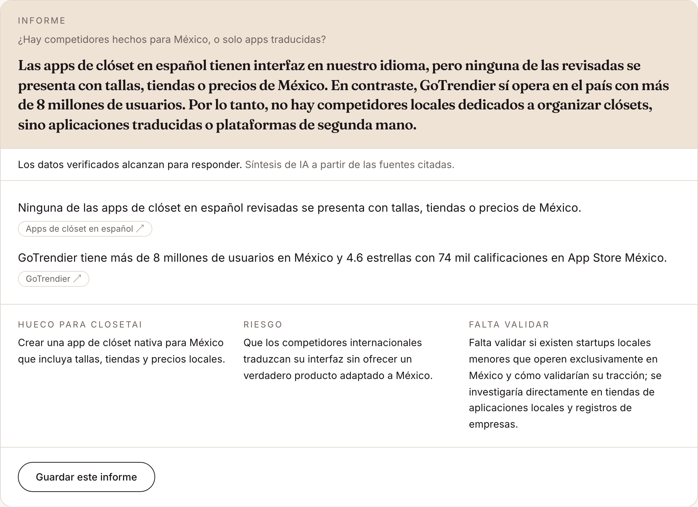
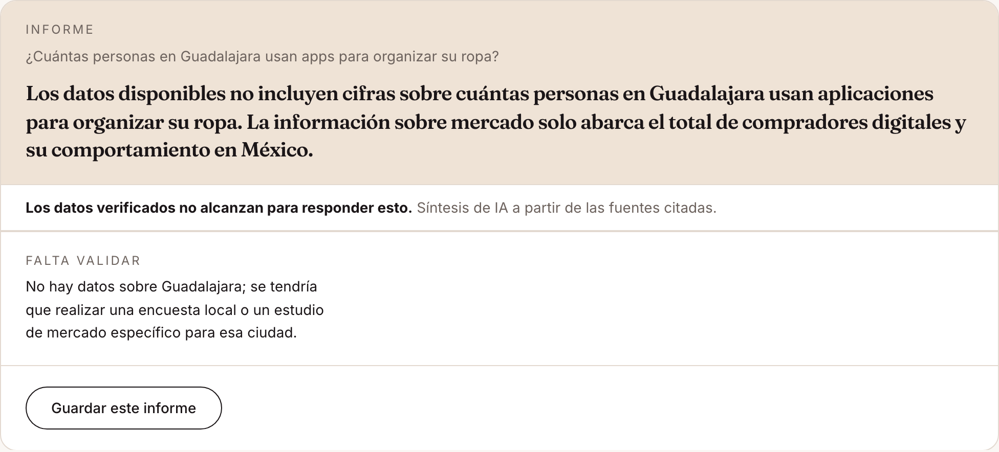
50 unit tests (27 new this week): the report contract — including rejecting the whole report if it cites a source that does not exist —, accent-insensitive search, risk ranking, and provider-failure handling with the literal 503 text from production. The key ones were verified by sabotaging the code to watch them fail for the right reason.
End-to-end, against production, on phone and desktop: /research 14 of 14. Full suite on
Sep 18: 67 pass; 1 intermittent stylist test (4 of 4 when run alone); 4 skipped by design or in chain.
That run also uncovered a real bug — see §12.
In person, on September 21, with consent to use it without a name — in this document and on the public page. Two limits, stated on the page itself: she is my mother, and at 57 she is outside my core 18–35 segment.
| What she said or did | |
|---|---|
| The problem | “Entre tanta ropa que tengo no sé qué ponerme, entonces me termino poniendo el mismo pantalón negro de siempre y solo le cambio la parte de arriba.” — With all the clothes I have, I don't know what to wear, so I end up in the same black trousers and only change the top. It took her 20 minutes. |
| What she already owns | “Un vestido hermoso en Mango hace 1 mes, no lo he usado… y además luego se me olvida.” — A beautiful dress from Mango a month ago; I haven't worn it… and then I forget about it. |
| Photographing clothes | “Puede ser que después de la prenda 40 ya sea muy tedioso.” — After the 40th item it might get too tedious. |
| Privacy | “Evitaría que saliera mi cara. Con cara lo pensaría 2 veces, por miedo a que las fotos salgan.” — I'd keep my face out. With my face I'd think twice, for fear the photos get out. |
| Paying | She has never used a closet app. She pays for Disney+ every month (339 MXN). |
| Using /core | She did it alone, without help. |
The quotes on the page were checked one by one against her answers before being published.
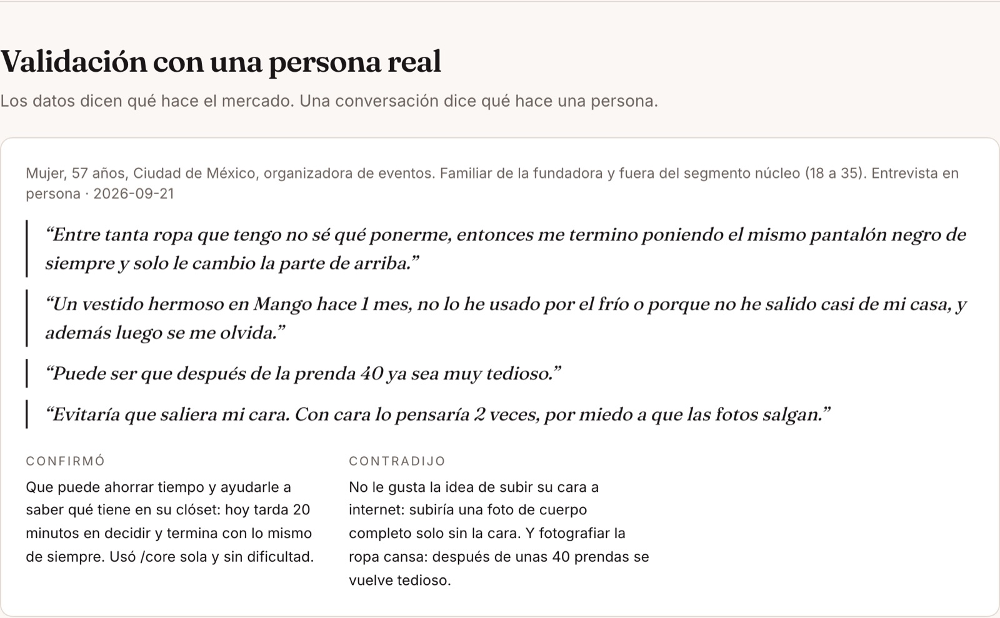
| What testing found | What changed |
|---|---|
| The search engine summarized two figures wrong | Every data point verified at its source; what could not be opened was discarded |
| The migration had 6 backticks that would break last week's method of applying it | Sent as escaped JSON; checked identical (13,547 characters) before running; verified against the database after |
| A 503 from Gemini told the person to rephrase their question | Provider failures classified (429 vs 503) in the retry and in /core and /research — last week's defect with another error code |
| Retrying a saturated model made people wait: measured 503, 503, and a 200 after 86 s; the lighter model answered in 0.5 s | 25 s per attempt, then the lighter model — only on provider failures. The model that answered is recorded |
| "22 pass, 0 fail" — but the 4 skipped were exactly the ones testing the fix | The quota gate checks both models; the 4 now run and pass. A green with skips is not a green |
| The report over-generalized "none of the ones reviewed" into "there are none" — while its own "to validate" line admitted the doubt | Prompt v2: keep the limit of the data. Same question, fixed |
| The 11th report from one IP was blocked | The per-IP limit works in production; tests now skip with that reason instead of failing |
| Every new account was born with the city mis-encoded ("Ciudad de M√©xico") since Week 0 — found in the screenshot of an unrelated flaky test | Migration 007 fixes the database default and repairs the rows; verified byte by byte; a new test creates a fresh account and checks it. In Week 1 I had fixed the symptom by hand, not the cause |
One correction of my own along the way: my first script to verify prompt v2 read the question instead of the answer and reported "does not generalize ✓". A check that passes without looking at what it claims to check. It was repeated reading the answer from the database.
2:30, recorded against the live site, hosted on the product's own domain: closetai.lat/demo/semana-2, narrated by me.
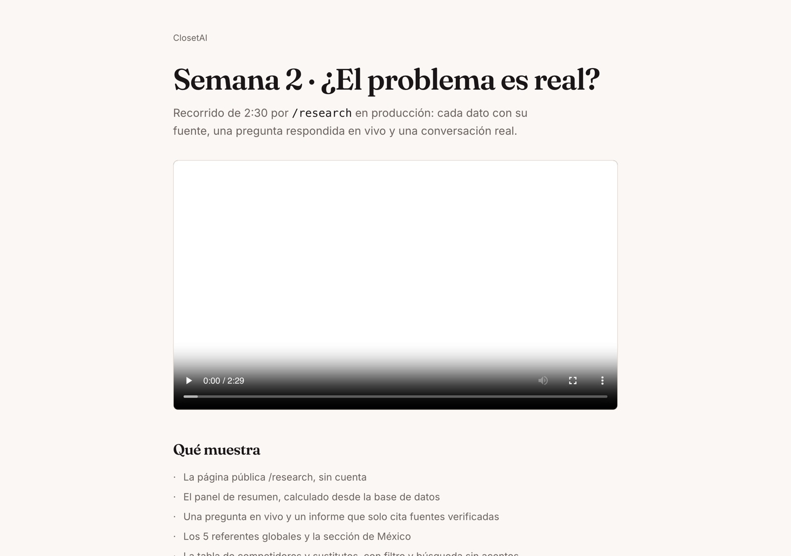
In order: the research page with no account; the summary panel; a question asked live and answered in seconds, citing only verified sources and saying “none of the ones reviewed”; the 5 global examples; Mexico; the table with the type filter and an accent-free search; the risk map; the real conversation; what was discarded; and the GitHub history, with the packet committed before the code.
This week I had to prove the problem is real, so I started by checking my own research. I opened every source instead of trusting a search summary, and nine claims in my master document did not survive. The one that hurt most was my thesis: I believed there was no closet app in Spanish, and there are several. The gap is not the language; it is Mexico — sizes, stores and prices in pesos. I also found an app already called "Closet AI".
The decision I defend is that the AI can only reason over data a person verified. I rejected letting it search the internet: in this same research, the search engine got two figures wrong. And when a report said "there are no local competitors" while its source said "none of the ones reviewed", I rewrote the prompt.
My real conversation was with my mother, 57 — outside my 18–35 segment, and the page says so. She still changed two things: she would photograph up to 40 garments, not the 10 I assumed, and she would upload a full-body photo only without her face, so try-on has to accept that. She pays monthly for Disney+, so my belief that people only accept one-time payments is unproven. That is my next conversation.
Testing also found a bug from Week 0 that I had once fixed by hand without looking for its cause. This time I fixed the cause.
| Gate | Required | Evidence |
|---|---|---|
| 1 — Plan | Build Discipline Packet complete before coding | §2 · e3f65d3, 14 minutes before the first code commit |
| 2 — Build | Code, commits and deploys completed | §6 · 15 commits · §7 · 14 production deployments |
| 3 — Test | Tests documented, bug fixed, redeploy completed | §10–12 · 5 defects found by testing, each fixed and redeployed |
| 4 — Explain | Demo and human decision note submitted | §13 · 2:30 video · §14 · 240 words |